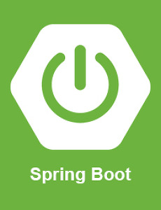

자기소개
.jpg)
Back-end Developer
- 생년월일: 1995-06-17
- 이메일: vinsulill@gmail.com
- 거주지: 경기도 부천시 옥길동
- Blog: https://pointman.tistory.com
- 학력: 동양미래대학교
- 전공: 전기공학
- 취미: 운동(헬스)
- GitHub: https://github.com/HSBODo
"저는 항상 3+2+1이 더 좋은 방법일지 3x2가 더 좋은 방법일지 고민하는 백엔드 개발자입니다."
안녕하세요, 1년차 백엔드 개발자 한수빈입니다.
항상 최적화된 서비스와 속도개선을 고민하며,
또 다른 문제가 나타나면 그 문제의 근본적인 원인을 찾아 해결하는 것에 큰 흥미를 느낍니다.
정답이 같은 다른 방법들에 대해 어떤 서비스에서 어떤 방법이 가장 최선의 방법인지 생각하며
경험을 통하여 배우고 있습니다.
주로 Open API, 위치 API, SMS 알람톡 API, PG결제 API 등 연동 업무와 API 개발 업무를 담당 하였습니다.
안녕하세요, 1년차 백엔드 개발자 한수빈입니다.
항상 최적화된 서비스와 속도개선을 고민하며,
또 다른 문제가 나타나면 그 문제의 근본적인 원인을 찾아 해결하는 것에 큰 흥미를 느낍니다.
정답이 같은 다른 방법들에 대해 어떤 서비스에서 어떤 방법이 가장 최선의 방법인지 생각하며
경험을 통하여 배우고 있습니다.
주로 Open API, 위치 API, SMS 알람톡 API, PG결제 API 등 연동 업무와 API 개발 업무를 담당 하였습니다.
Skills



자격증 및 경력
자격증
- 정보처리 산업기사 (2022.04)
- 한국사 능력검정 1급 (2020.09)
- 컴퓨터 활용능력 2급 (2020.06)
- 1종 대형 운전면허 (2019.05)
- 컴퓨터응용선반 기능사 (2012.11)
- 컴퓨터응용밀링 기능사 (2012.04)
- 전산응용기계제도 기능사 (2011.07)
경력
- 메이크봇 (경력 1년4개월)
Projects
회사명: 메이크봇
담당업무:B2B 서비스로 카카오톡 및 웹 채팅 등 사내 챗봇 엔진(node.js)과 API 통신으로 챗봇을 이용하여 상품구매 및 안내 챗봇 개발
대한항공 안내 챗봇 고도화
2023.02~2023.04(3개월)
개발인원: 개발자(2명)
대한항공 웹 챗봇(대한항공) 및 카카오톡 챗봇 (대한항공 카카오채널)고도화 및 속도개선 업무를 담당하였습니다.
대한항공 챗봇 서비스 응답속도 개선을 요청받아서 확인한 결과
사내 챗봇 엔진(node.js)의 싱글스레드 방식 특성상 서버의 성능을 최대한 사용하지 못하였고
성능을 최대한 사용하기 위해 pm2 Cluster를 적용하여 요청을 분산하여 처리하였습니다.
pm2 로그를 확인 중 요청이 즉각적으로 처리 되는 것이 아닌 대기하는 것을 확인하였고
기존에 node의 DB커넥션이 1개로 모든 요청을 처리하고 있는 것을 확인하였습니다.
노드의 connectionPool을 사용하여 커넥션을 기다리는 것이 아닌
사용가능 한 커넥션을 즉시 pool에서 할당 받아 처리하도록 고도화 하였습니다.
그 결과 트레픽이 없을 때에는 효과는 미비하였지만
트레픽이 많을 때 기존의 챗봇 응답속도의 57% 향상을 확인하였습니다.
kt m&s 사내챗봇
2022.12~2023.01(2개월)
개발인원: 개발자(1명), 기획자(1명)
kt m&s 사내에서 웹챗봇 및 카카오톡 챗봇을 이용하여 직원 전용 FAQ 챗봇 프로젝트를 수행하였습니다.
프로젝트를 수행하기 앞서 기존에 PHP로 개발한 서비스는 Connection Pool을 지원하지 않아 서비스중 트레픽이 몰리면
요청 하나하나 마다 커넥션을 연결하고 끊고를 반복하였고 커넥션을 연결하는 3 way handshake 과정 때문에
속도저하에 원인중 하나라고 생각 하였습니다.
또한, 커넥션을 하나의 객체로 관리하기 힘들었던 경험이 있었습니다.
이번 프로젝트는 spring 프레임워크를 도입하여 tomcat 보다 성능이 좋은 hikaricp 커넥션 풀을 사용하고
의존성주입과 spring container가 bean을 싱글톤 객체로 관리하고 JVM의 가비지 컬렉터가
불필요한 메모리를 정리함으로 기존보다 더욱 더 속도 향상 및 개발속도 향상이 있을 것으로 생각하였습니다.
또한, 사내 챗봇이기때문에 인증된 회원만 사용 하도록 해야 했고
웹챗봇의 경우 웹로그인시 자동 로그인 하도록 해야 했기 때문에 SSO(single sign on)인증 방식을 사용하였습니다.
그 그결과 기존 프로젝트 기간을 단축 하였고 나머지 시간을 테스트에 할당하여 더욱 안정적인 서비스를 개발하였고
사내 최초의 spring boot를 이용한 프로젝트를 성공적으로 완수하였습니다.
사내챗봇 도입으로 상담원 문의 건수 34% 감소의 성과를 이루었습니다.
공영홈쇼핑 상품주문 챗봇
2022.08~2022.11(4개월)
개발인원: 개발자(3명), PM(1명), 기획자(1명)
공영홈쇼핑 카카오톡 챗봇을 (공영홈쇼핑 카카오채널)이용하여 상품을 구매하는 프로젝트를 수행하였습니다.
공공기관 특성상 챗봇엔진(node.js)와 내부API(PHP) 그리고 기간계API(java/spring) 3개의 서버가 통신을 해야 했습니다.
기간계 API(java/spring)에서 상품 정보나 고객정보 데이터를 가져오는 model의 역할을 하도록 설계하였고
내부API(PHP)에서 데이터를 이용한 핵심 로직을 실행하는 service의 역할을 수행했으며
챗봇엔진(node.js)은 요청을 받고 응답하는 controller 역할을 수행하도록 설계해였습니다.
프로젝트중 가장 핵심은 결제 기능을 담당 하였고 PG사 연동 및 카카오페이 결제 API 업무를 수행했습니다.
기존에 결제에 필요한 24개의 데이터를 가져오는 쿼리의 join을 최적화 하기 위해 PHP에서 지원하지 않는 spring의 spring container를 사용하여
나머지 공통된 데이터들은 bean으로 등록하여 관리하도록 하였고
그 결과 1.6초 -> 0.8초로 응답시간 50% 속도 개선 하였고
카카오톡 챗봇 도입으로 인해 기존 매출의 23% 향상의 성과를 이루었습니다.